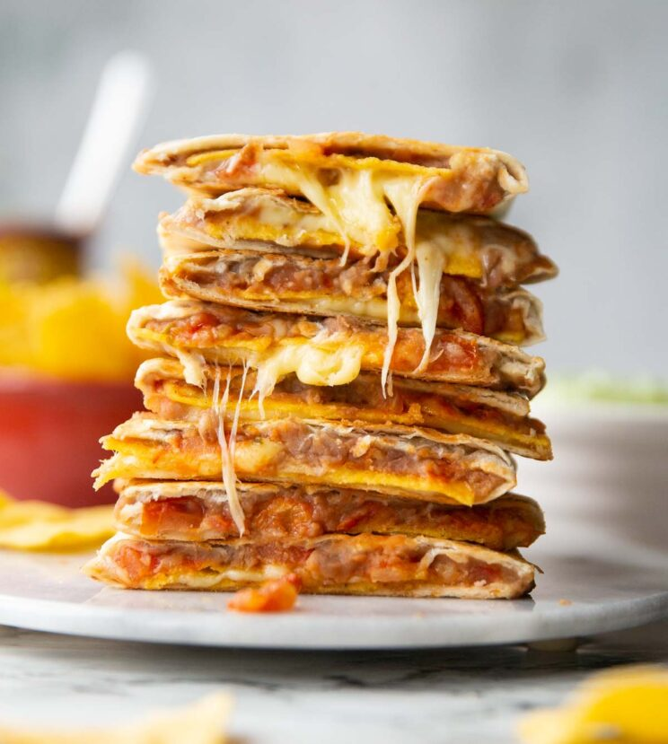

Quesadillas

Description
Wondering what you can do with a can of refried beans? Look no further. These could well be the easiest quesadillas you’ll ever make! Follow me…
Ingredients
- Wraps
- Refried Beans
- Cheese
- Tortilla
Steps
- Spread refried beans over one half of each wrap. Dot over salsa, then top with tortilla chips and cheese. Fold each wrap over and gently press down to secure.
- Lightly spray a pan over medium heat, then add two quesadillas. Spray the top, then fry for a couple of mins until golden and crisp on the bottom. Flip them over add cook for another 2-3mins until golden and crisp on the other side. Remove from pan and repeat batches.
- Slice quesadillas in half then serve up and enjoy!